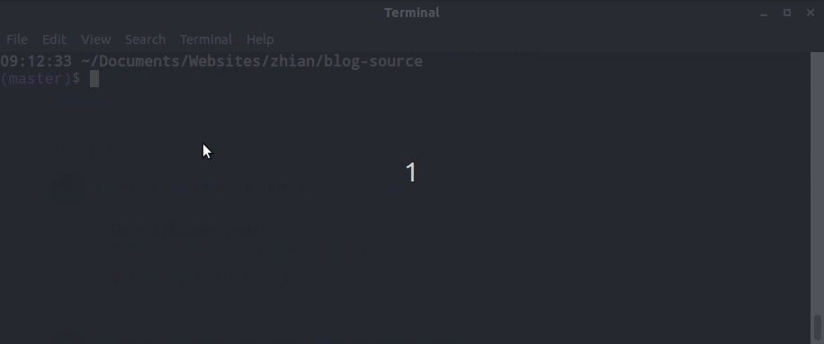

Things I Learned About 2-Factor Authentication on GitHub
3 min readSince the end of 2018, I’ve been a part of a collaboration between RECON and MSF called the R4EPIs initiative where we are trying to integrate a more standardized workflow of R for field epidemiologists so that it can be more cost-effective (no license fees) and troubleshooting among epidemiologists can be more effective. We have a repository to host templates for automated situation reports at https://github.com/R4EPI/sitrep. When we created the GitHub organisation, we wanted to make sure that the code being submitted to the repository was genuinely authored by the person and didn’t contain malware from a hijacked account1, so we required 2-factor authentication for the R4EPI github organisation from the start.
Use the SSH protocol with GitHub if you use 2FA
If things went smoothly, I wouldn’t be writing a blog post about this. The main hiccup here was not the 2-factor authentication part. Apps like Google Authenticator or Authy make it really easy to set this up by allowing you to download an app and scan a QR code with your phone camera to set it up. The roadblocks came from using git on the command line.
When users set up git on their computer, GitHub recommends that they use the https protocol for various reasons, but partially because this is the easiest to set up. The problem is that if you have 2-factor authentication set up, even if you have a credential helper to cache your password, that’s only one part of the 2-factor authentication. You will still need to authenticate yourself every single time you pull and push, which causes issues like this:

To solve this, we told our members to use the ssh protocol. This is a bit more involved because the user has to interact with the command line, but there are several good walkthroughs, including the extremely helpful happy git with R by Jenny Bryan. When you have an SSH key, you are telling GitHub that you trust that particular machine and don’t need any secondary authentication if code is coming from there. One of the things I like about SSH keys is the fact that you can remove them from GitHub if your laptop gets stolen/repurposed.
Of course, if your repositories were already cloned using the https method, then you need to change the remote URL to use SSH. Copy and paste this code to change an https remote to SSH (assuming that you only need to change the origin remote):
git remote get-url origin \
| sed 's_https://github.com/_git@github.com:_' \
| xargs git remote set-url origin
If you don’t use git on the command line, you can still do this within R using the git2r package:
myurl <- git2r::remote_url(remote = "origin")
newurl <- sub("https://github.com/", "git@github.com:", myurl)
git2r::remote_set_url(name = "origin", url = newurl)
Make sure you have your backups
When I started using 2fa, I used both an authenticator app and a phone number. This worked great until the day that I tried to replace the battery on my phone and ended up damaging the screen. It’s no surprise that my 2fa no longer worked for me when I couldn’t access the only place I had the secondary authentication. Nowadays, I have a YubiKey on my keychain, one at home, and a set of recovery codes in a safe place in case I ever lose my phone.
the risk of this is low, but when this involves code that will handle epidemic data, it’s better to be safe than sorry.
[return]